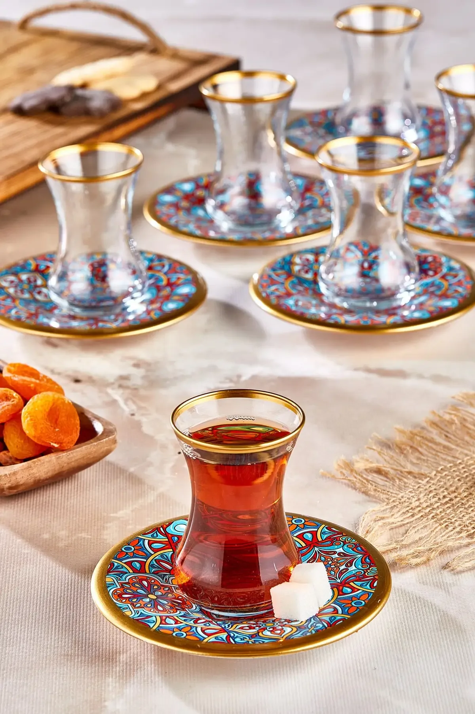
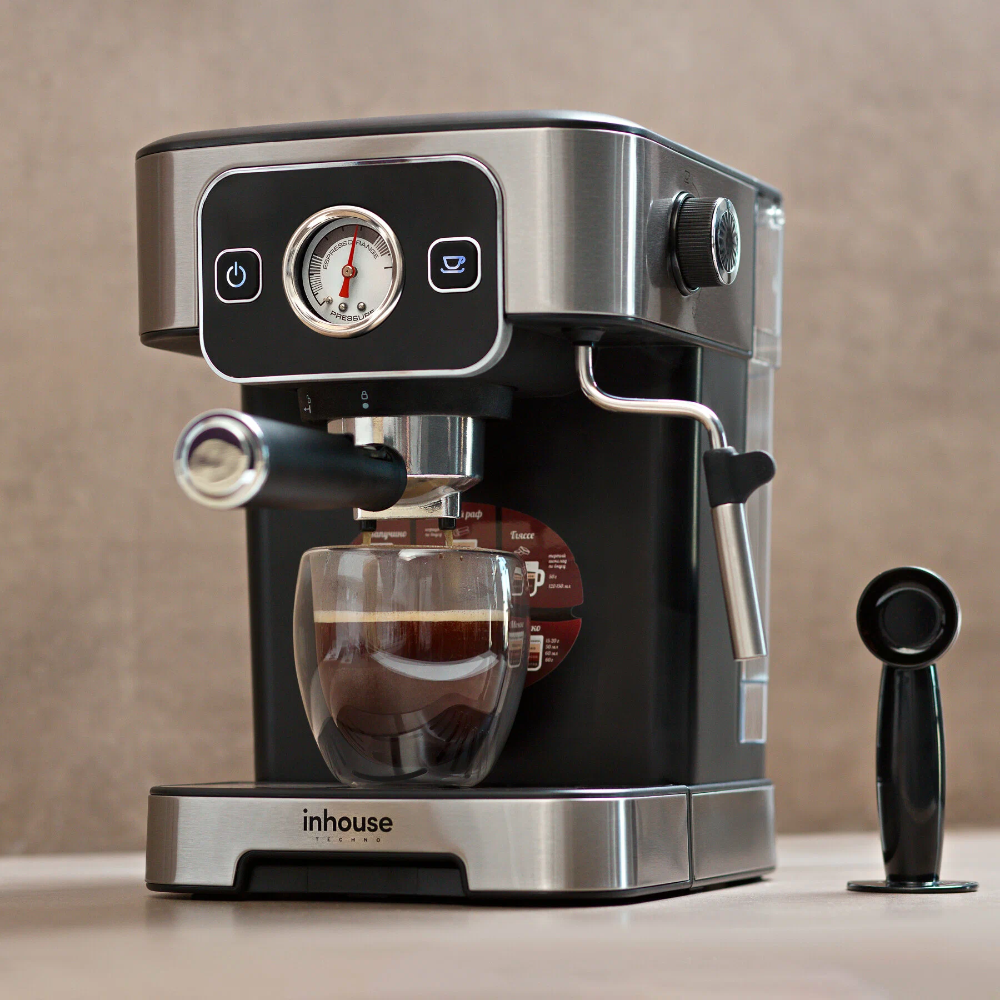

Термокружка
Благодаря двойным стенкам из нержавеющей стали с вакуумной изоляцией напиток сохраняет тепло до 6 часов и остаётся холодным до 12 часов.
Мы создаем красивые и функциональные веб-интерфейсы.
Благодаря двойным стенкам из нержавеющей стали с вакуумной изоляцией напиток сохраняет тепло до 6 часов и остаётся холодным до 12 часов.

Традиционная турецкая чашка-стакан в виде тюльпана.

Электрическая кофеварка готовит ароматный эспрессо за две минуты. Объём резервуара 1,5 литра позволяет сделать до 10 чашек кофе. С помощью специальной системы можно настроить крепость напитка.